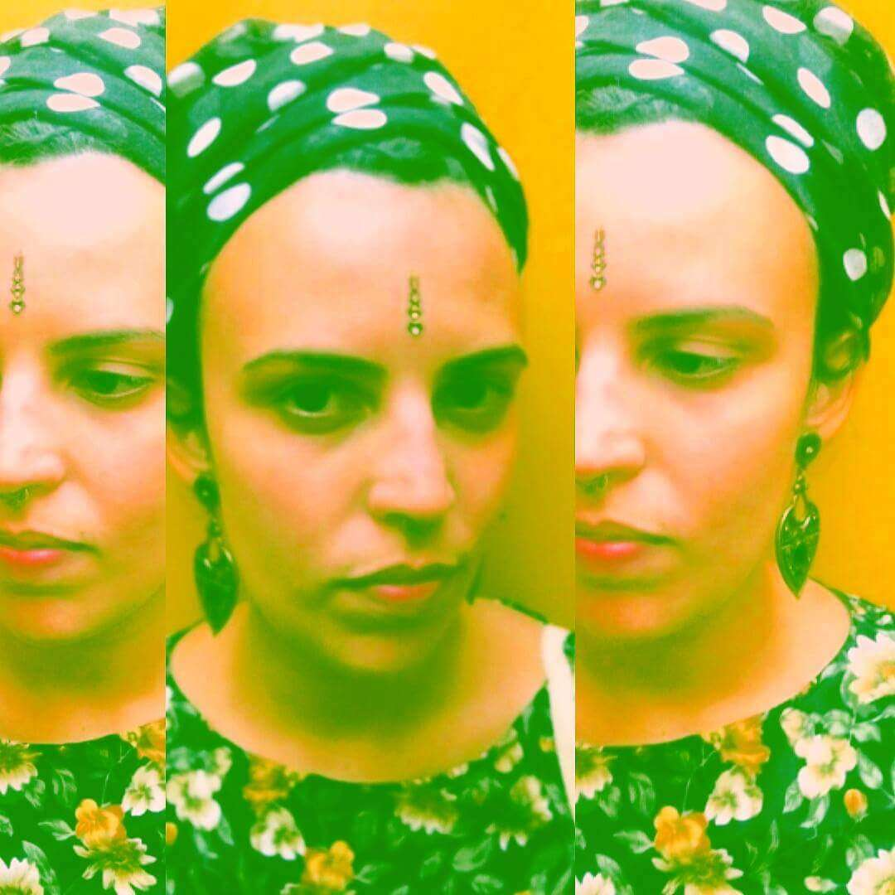

Funções / Continuidade
Você quer conhecer profissionais de quais estados?
CARREGANDO ...
Anna Paula Furtado (SP)
Anna Paula Furtado
21 anos | São Paulo (SP)
furtadoannapaula@gmail.com
Estou no oitavo semestre da faculdade de Cinema. Dirijo e faço o roteiro do meu TCC, um documentário sobre resistência feminina no Samba. Busco atuar nessas áreas, de cultura popular e questões de gênero e raça. Estou no começo da minha carreira mas sonho grande e não paro quieta, estou sempre à disposição!
Outras atividades de Anna Paula Furtado
Direção |
Fotografia Still |
Produção |
Roteiro
Amostra de vídeo
 Karina Gama (RJ)
Karina Gama (RJ)
Karina Gama
24 anos | Rio de Janeiro (RJ)
kakahgama@gmail.com
Atualmente Estudante de Produção Cultural, no Instituto Federal do Rio de Janeiro (IFRJ). Durante dois anos, entre o período de 2009 e 2011, aperfeiçoei meus conhecimentos na "Escola de Artes e Tecnologia Oi Kabum!", adquirindo aprendizagem em Design Sonoro, Vídeo, Design Gráfico e outros temas vinculados ao Audiovisual, tendo especialização em Motion Design. No período entre 2010 e 2011 tive a chance de estudar na "Escola de Cinema 5 Visões, Formação Técnica Audiovisual", onde obtive conhecimento sobre Direção, Produção, Iluminação e Fotografia, tendo também especialização em Figurino e Maquiagem.Vale ressaltar minhas atuações na área de Audiovisual com cinema e TV atuando como Continuista, auxiliando na Direção cinematográfica.
Outras atividades de Karina Gama
Captação de recursos |
Produção
Amostra de vídeo
 Victória Moreira (SP)
Victória Moreira (SP)
Victória Moreira
21 anos | Osasco (SP)
victoria.mslopes@gmail.com
Victória Moreira, 21 anos, estudante de rádio, TV e internet da faculdade Cásper Líbero. Experiência com os softwares: Illustrator, Photoshop, Premiere, After Effects e Audition.